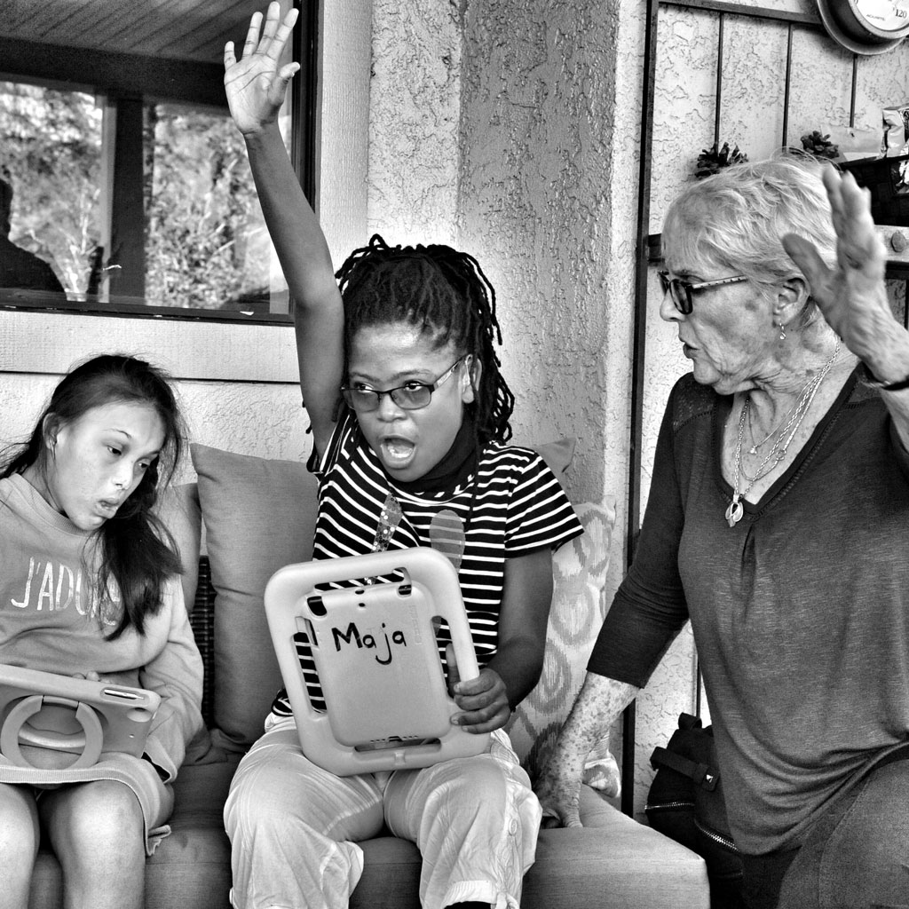

Classroom Program

We recognize that as unique as each student is, the approach to their academic learning is equally unique. CREST’s philosophy about learning is not “cookie cutter” but rather utilizes any and all approaches and programs that allow each student to maximize their potential to learn.
Curriculum materials are based on California Common Core with modifications to meet individual student needs as well as provide for alternative modifications. The use of technology, such as SmartBoards and specially designed curriculum aligned to Common Core (Unique Learning System) is implemented within the classroom curriculum. Our goal is to ensure that students have exposure to and are able to derive benefit from a general education curriculum, recognizing that for each student this benefit may be expressed in different ways. CREST also recognizes that each student learns at a different rate and often has abilities that may far exceed their grade level placement. CREST is dedicated to allow for continued growth in areas of excellence while continuing to focus on identified needs. Specific academic targets are identified through an IEP process, are a focus during instructional periods, with growth measured by accurate data collection. As an outgrowth of our philosophy, we also recognize and encourage alternative ways that our students are able to express their learning.
Specific components of the program include:
Classroom Academics: Basic literacy (including recognition and comprehension of written material), mathematics (number recognition, calculation and processes), science, and social sciences. Curriculum materials are based on those utilized for students in general education settings based on California Common Core with specific modifications to accommodate the needs of the students in the program. This ensures that students have exposure to and are able to benefit from a typical classroom curriculum. Additional California State Department of Education approved curriculum designed specifically for students with special needs is also utilized.
Social Skill Development: Students who are unable to communicate effectively often resort to behaviors as an attempt to get their needs met. These students are often unaware of the effect that their behaviors have on others and do not recognize they are often effectively removing themselves from making and maintaining relationships with peers as well as adults. Developing a system of communication helps to ameliorate the behaviors but at the same time the students require specific education in developing appropriate social behaviors. By using appropriate peer modeling, feedback, and role-playing students are assisted in developing social skills that enable them to be a part of their various communities.
Sensory and Motor Skill Development: Many of the students present with impaired sensory systems, meaning that they do not process and coordinate basic sensory information. Specific therapies are designed to assist students in either sensitizing or de-sensitizing sensory input so they are better able to adjust to their environment. Additionally, students often do not develop gross motor skills that lead to participation in basic activities related to play (I.e., hopping, skipping, jumping) and sport activities (i.e., basketball, baseball). These skill sets are established or progressed through daily activities in natural environments or in the gymnasium/multiple use room.
Communication/Language Development: Recognizing that communication is basic to the development of all academic and behavioral skills, a variety of approaches are utilized, including but not limited to verbal speech production, sign language, and all forms of technology (i.e., programs designed for iPads). Behavioral concerns are approached based on analyzing the function of the behavior and then providing peer reviewed therapies.
Activities, as described above, are presented in both the classroom environment and individual/small group therapies.
Classroom/Therapy Staff: Classroom activities are conducted by credentialed special education teachers with appropriate education and training in meeting the needs of students with autism or other related developmental activities. Therapists holding credentials/licenses in respective fields of expertise that may include speech/language therapy (Speech/Language Pathologists), Occupational Therapy (including expertise in sensory integration and fine motor skills), Gross Motor Skills (Adapted Physical Education Specialists) and Behavior (Certified Behavior Analysts) are also onsite. Therapies may also be delivered by appropriately certified interns or other recognized titles related to fields of expertise.
Our credentialed, experienced, and professionally trained teachers collaborate with specialists (Speech Pathologists, Occupational Therapists, Behavior Specialists) to deliver instruction using a variety of instructional strategies and multi-modality methodologies.
In order to best emulate a typical educational environment, the educational and therapy activities are conducted during normal school hours (8:30 am – 2:30 pm), Monday through Friday, 180 days a year (as mandated by California Department of Education) with an additional 20 days for Extended School Year (sometimes referred to as Summer School).